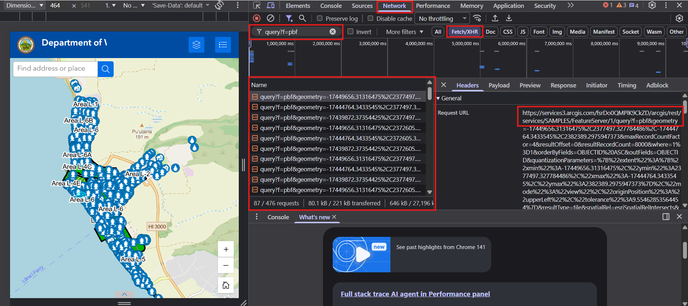
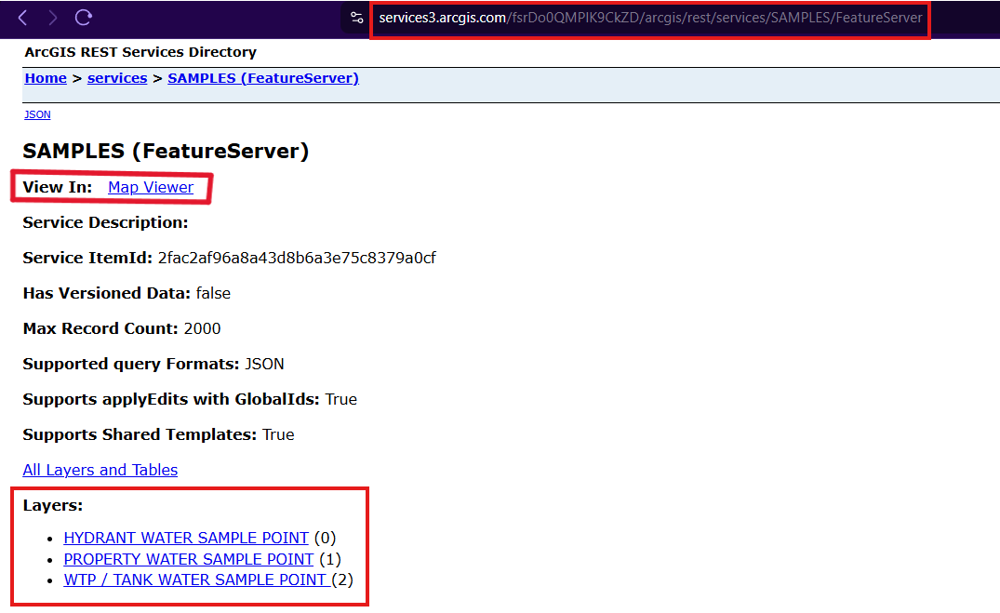

Water Sample ETL Pipeline
Webscraping Methodology
Goal
Webscrape and extract the coordinates of all points within the Department of Water Supply - Water Advisory Area Address Locator Web App.
Find Where to Pull the Data From

The legend shows that the water samples come from three spatial layers: hydrant, property, and WTP/tank. To see where the data is being pulled from, we need to find the request URLs using the Chrome DevTools (inspect element tool) by:
- Going to the “Network” tab
- Pressing the “Fetch/XHR” button to filter to requests
- Filtering to PBF data, which holds the feature data by inputting “query?f=pbf” into the filter bar
- Clicking one of the queries within the “Name” box
- Inspecting the Request URL to get the base URL

Here, we can see that the water sample data is being pulled from the SAMPLES feature server: https://services3.arcgis.com/fsrDo0QMPlK9CkZD/arcgis/rest/services/SAMPLES/FeatureServer/.

From there, we can see the three layers listed and their IDs. We can also go to the map viewer to confirm if this is actually the data we want to be requesting.
Build Query and Request Water Sample Data
Here are the feature layer base URLs:
- Hydrant Water Samples: https://services3.arcgis.com/fsrDo0QMPlK9CkZD/arcgis/rest/services/SAMPLES/FeatureServer/0
- Property Water Samples: https://services3.arcgis.com/fsrDo0QMPlK9CkZD/arcgis/rest/services/SAMPLES/FeatureServer/1
- WTP/Tank Water Samples: https://services3.arcgis.com/fsrDo0QMPlK9CkZD/arcgis/rest/services/SAMPLES/FeatureServer/2
You can see the parameters you can specify in your query by:
- Going to the end of one of the feature layers above
- Clicking Query (Example URL: https://services3.arcgis.com/fsrDo0QMPlK9CkZD/ArcGIS/rest/services/SAMPLES/FeatureServer/0/query)
ETL Pipeline Overview
The figure below shows the automated {targets} pipeline used to download, process, and export water sample data from the Maui County Department of Water Supply ArcGIS feature service.
Workflow Summary
- Define layers: The
feature_layerstarget lists the three ArcGIS feature server layers (hydrant, property, WTP/tank). - Fetch counts:
layer_countsqueries how many records each layer contains. - Download:
raw_layerdownloads each dataset (runs as dynamic branches in parallel). - Tidy:
tidied_layercleans and standardizes each dataset’s columns and location strings. - Merge:
merged_ws_sfcombines all tidied layers into a single spatial object (sf). - Export:
exported_ws_datawrites the final shapefile to/data/03_output/merged_water_samples/.
Each circle in the graph represents a target (a single object or file), and each square represents dynamic branches that run independently for each layer.
Interactive Table
Interactive Map
Reproducibility
This project uses renv for dependency management.
Restore Environtment
To reproduce this environment:
renv::restore()Session Information and Dependencies
Project directory: F:/shuler_lab_projects/voc_ws_comparison R version 4.5.0 (2025-04-11 ucrt)
Platform: x86_64-w64-mingw32/x64
Running under: Windows 11 x64 (build 26200)
Matrix products: default
LAPACK version 3.12.1
locale:
[1] LC_COLLATE=English_United States.utf8
[2] LC_CTYPE=English_United States.utf8
[3] LC_MONETARY=English_United States.utf8
[4] LC_NUMERIC=C
[5] LC_TIME=English_United States.utf8
time zone: Pacific/Honolulu
tzcode source: internal
attached base packages:
[1] stats graphics grDevices datasets utils methods base
other attached packages:
[1] htmltools_0.5.8.1 fs_1.6.6 readr_2.1.5 mapview_2.11.4
[5] DT_0.34.0 visNetwork_2.1.4 sf_1.0-21 dplyr_1.1.4
[9] tarchetypes_0.13.2 targets_1.11.4
loaded via a namespace (and not attached):
[1] bslib_0.9.0 xfun_0.54 raster_3.6-32
[4] htmlwidgets_1.6.4 processx_3.8.6 lattice_0.22-6
[7] tzdb_0.5.0 callr_3.7.6 leaflet.providers_2.0.0
[10] vctrs_0.6.5 tools_4.5.0 crosstalk_1.2.2
[13] ps_1.9.1 generics_0.1.4 stats4_4.5.0
[16] base64url_1.4 parallel_4.5.0 tibble_3.3.0
[19] proxy_0.4-27 pkgconfig_2.0.3 KernSmooth_2.23-26
[22] satellite_1.0.6 data.table_1.17.8 secretbase_1.0.5
[25] RColorBrewer_1.1-3 uuid_1.2-1 leaflet_2.2.3
[28] lifecycle_1.0.4 compiler_4.5.0 farver_2.1.2
[31] textshaping_1.0.4 terra_1.8-70 codetools_0.2-20
[34] sass_0.4.10 class_7.3-23 yaml_2.3.10
[37] jquerylib_0.1.4 pillar_1.11.1 classInt_0.4-11
[40] cachem_1.1.0 brew_1.0-10 tidyselect_1.2.1
[43] digest_0.6.37 rprojroot_2.1.1 fastmap_1.2.0
[46] grid_4.5.0 here_1.0.2 cli_3.6.5
[49] magrittr_2.0.4 base64enc_0.1-3 leafem_0.2.5
[52] e1071_1.7-16 withr_3.0.2 prettyunits_1.2.0
[55] scales_1.4.0 backports_1.5.0 sp_2.2-0
[58] rmarkdown_2.30 igraph_2.2.1 hms_1.1.4
[61] png_0.1-8 evaluate_1.0.5 knitr_1.50
[64] rlang_1.1.6 leafpop_0.1.0 Rcpp_1.1.0
[67] glue_1.8.0 DBI_1.2.3 renv_1.1.5
[70] svglite_2.2.2 rstudioapi_0.17.1 jsonlite_2.0.0
[73] R6_2.6.1 systemfonts_1.3.1 units_1.0-0 For the complete dependency list, see the renv.lock file.
Environment Status
No issues found -- the project is in a consistent state.